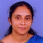

ASSOCIATIONS
Mixed Signals, the Electronics Association of Model Engineering College is the joint venture of the staff and students of Electronics and Communication Department. The club aims at making the students aware of the latest cutting edge technologies.
Mixed Signals, the Electronics Association of Model Engineering College is a joint endeavour of the staffs and students of Electronics Department. With a solid vision ahead, Mixed Signals aims at organising activities that promote interest as well as spread awareness regarding the latest developments in the field of Electronics and Circuit Design, among the members, engineering students and the public.Working steadily towards its mission, the following are some of the activities undertaken by Mixed Signals
- Working steadily towards its mission, the following are some of the activities undertaken by Mixed Signals
-
Holding contests and competitions to test the knowledge of the participants and instil in them the desire to know more.
- Staging exhibitions and demonstrations and conducting workshops and industrial visits to improve the practical knowledge of the budding engineers and make them industry ready.
- Conduct coaching classes for weak students in the specific areas of Electronics and Communication and other subjects on demand.
Office bearers

Dr.Jobymol
STUDENT ACHIEVEMENTS
- Sumesh K Sadanandan of 2014 batch was one among the finalists of the fifth edition of Nebula 2012, a national level circuit design competition conducted by Cadence.
- Three teams from the college led by Gokul Krishnan, Vimal Chacko and Paul P Vinod of the 2016 batch qualified for the quarter finals of the Texas Instruments Innovation Challenge 2015.
- Roshan Roy and Sachin Tarakan of 2008 batch bagged the second prize in IEEE National Level Project Demonstration competition for their voice controlled car, held at Hyderabad.
- John Paul Xavier of 2008 batch won the first place in the 'Design the Next Chevrolet Contest' held by General Motors India.
- Messrs. Balasubrahmanyam S, Aravind Krishnan and Sreekanth S of 2006 batch were a part of the nVIDIA team that launched the nVIDIA GeForce 9400 Graphics Processing Unit.
- Prof. T K Mani, Head of the Dept., Electronics and Engg., won the first prize in the design contest organised by MicroChip, USA in 2004. He has also presented a research paper in the 47th meeting of Acoustical Society of America. He is also the recipient of Sir C V Raman Award in 2002 for his paper "The Acoustic of Raindrop Impact".
- Vinitha Suresh of 1993 Batch won the Innovator Asia Award from EDN Asia Magazine.
- Niyaz K Zubair of 2005 Batch is a recipient of special KVPY Award from IISc Bangalore.
- Alphus Pathrose of 1997 Batch reached the final round of BBC Master Mind India Quiz
- Joseph Alphonse Mathew of 2006 batch was part of the team that came first in Maverick, an All India Deloitte event, in October 2010.
- Bibin George of 1995 batch is the co-inventor of the US patent 7,177,349 for High Impedance State for Digital Subscriber Line Transceivers on Twisted Copper Pairs.
- MEC students Harisankar A, Jaison Varghese, Raveendra Pai G came up with first place in the i-Talent all India level project presentation contest. iTalent is an event conducted by CII (Confederation Of Indian Industries).
- Deepak Dutt, of 1998 Batch, has won the "Quality Award of Excellence" from Nortel Networks